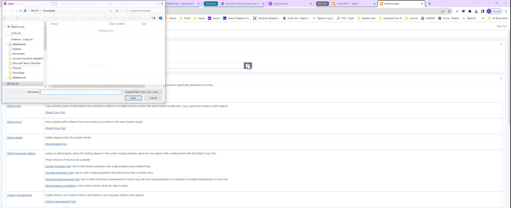
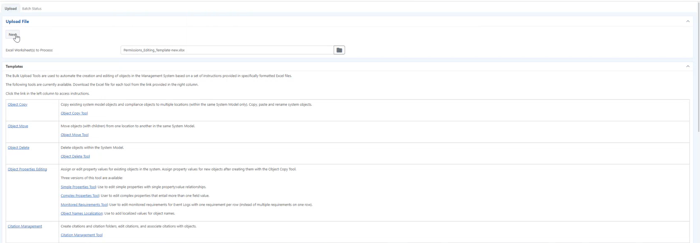
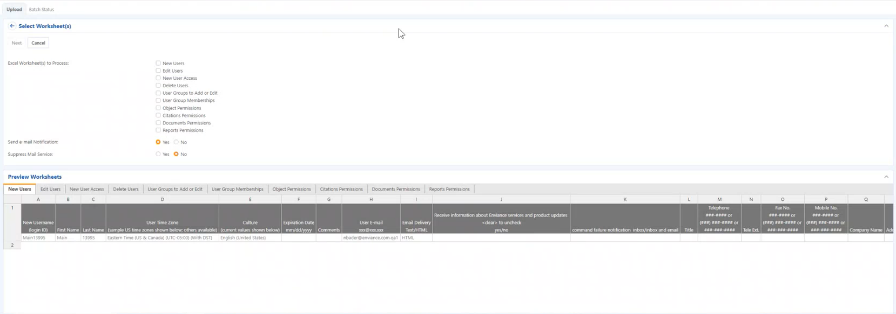
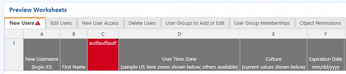
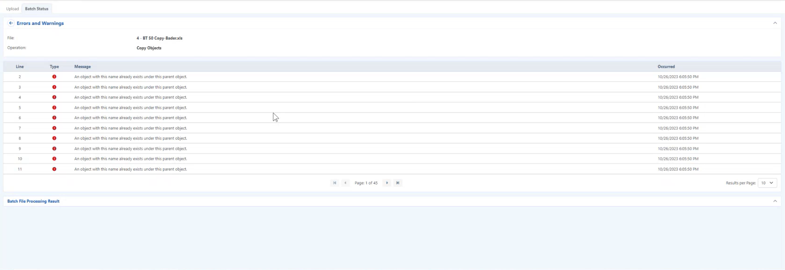
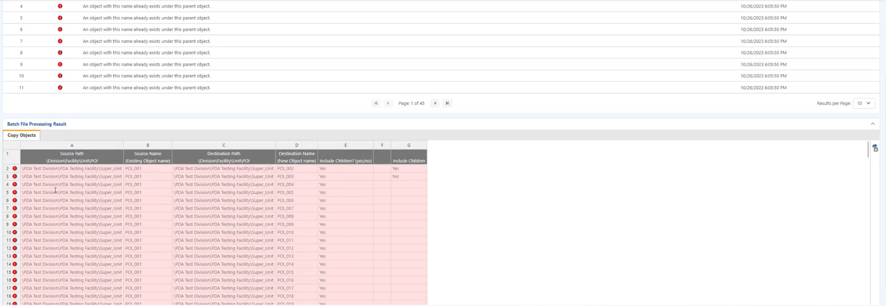
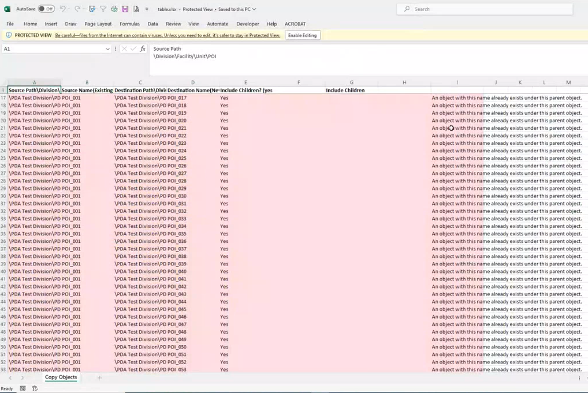

Some tools have multiple worksheets, others only one. Each worksheet is basically a separate tool. You can include only the worksheets you want to use. Multiple tools may also be combined in one Excel file on separate worksheets. So, for instance, you can have an Excel file with 1) a worksheet to copy objects from the Object Copy tool, and 2) a worksheet for editing Object Permissions from the Permissions Editing Tool. You can upload both worksheets together from a single Excel file and choose only the worksheet(s) you want to process in a single transaction. To minimize debugging and re-running, it is recommended that you only process one worksheet at a time, unless you have already thoroughly tested your files.
If you are processing more than one worksheet in one transaction, the order of the worksheets is important, as worksheets are processed according to their order in the file.
To upload a filled in template into the Bulk Tools app
In the Upload File section, click the Browse button. The File Explorer window opens.

Select the file to upload from your computer or network.
Click Open.
On the Upload File section of the Bulk Tool Page, click Next.

The Select Worksheet(s) section displays.

In the Excel worksheet(s) to Process section, you can select the worksheets you want to process.
Worksheet list is based on tabs in the template uploaded.
Suppressing notifications while processing is advised and is selected by default.
You can also choose whether to receive email notification when the job is complete, which is useful when processing large files or multiple files.
In the Preview Worksheets section, you can see if there are any validation errors by the color of the tab. If the tab is red than there is a validation error.

Click a tab that has the red alert icon, in the worksheet selected. Columns with errors will be in red.
Once your review is completed, in the Select Worksheet section, click Next. The Summary section appears.
The Statistics column shows the transaction activity as: #T/#E/#W/#F where #T=total number of transactions, #E=total executed (succeeded), #W=total warnings, and #F=total failed.
Click the Statistics link to view the error messages. The Errors and Warnings section, and Batch File Processing Results section appears. Errors are indicated on a line per line basis of the template uploaded.

In the Errors and Warnings section, the number of error messages displayed per page can be modified by clicking the Results per Page drop down textbox and selecting a value.
In the Batch File Processing Results section, you can view in detail line by line and information on each field of the line to update the template on your desktop.

To export the Batch File Processing Results section into an excel document, click the export icon.
In the exported excel document you can filter for the errors and address all lines with the same error, and then remove the error column.

Once all the errors have been corrected, you can re-upload the template, by clicking the Browse button. The File Explorer window opens.
Select the file to upload from your computer or network.
Click Next.
The worksheets in the Excel file will be listed. Select the worksheet(s) to process.
Click Next.
Once an excel template has been uploaded in the Bulk Tools app, click the Batch Status tab. A list of templates (batches) uploaded display with statuses.
The Statistics column shows the transaction activity as: #T/#E/#W/#F where #T=total number of transactions, #E=total executed (succeeded), #W=total warnings, and #F=total failed.
Once all errors are resolved in sandbox, your file will be ready to run in production.
 button. The File Explorer window opens.
button. The File Explorer window opens.